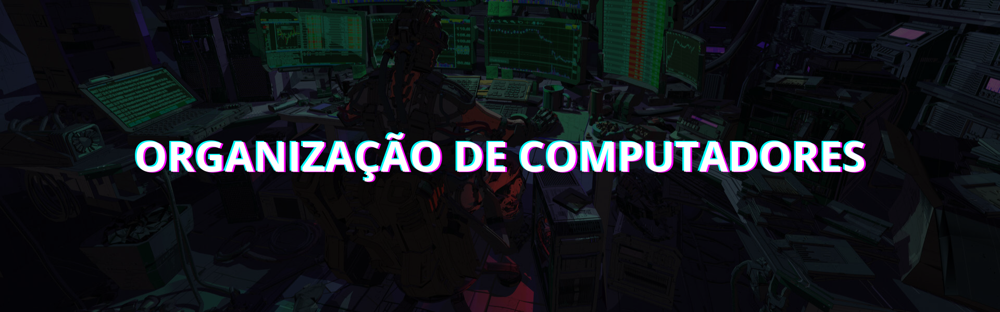

A filosofia hacker transcende a simples habilidade técnica ou a ideia estereotipada de um indivíduo isolado em frente a um computador tentando quebrar sistemas. É um ethos, uma mentalidade que valoriza a criatividade, o aprendizado constante e o uso do conhecimento para explorar e melhorar o mundo ao nosso redor. Ser hacker é uma forma de encarar desafios, questionar estruturas estabelecidas e encontrar soluções inovadoras, muitas vezes em espaços onde outros só veem limitações.
No centro da filosofia hacker está a curiosidade insaciável. Hackers não se satisfazem com o uso superficial de tecnologias; eles querem entender como algo funciona, desmontá-lo e, muitas vezes, reconstruí-lo de uma maneira melhor. Essa busca pelo conhecimento vai além do campo técnico e se expande para áreas como arte, ciência, ética e cultura.
Hacking Roadmap
Filosofia
Ferramentas são apenas meios, não fins
Uma ferramenta é, por definição, um instrumento projetado para realizar uma tarefa específica. Scanners de rede, exploits automáticos e frameworks de pentest são úteis e podem poupar tempo. Contudo, seu uso eficaz exige compreensão do que está acontecendo por trás das interfaces e dos comandos. Rodar ferramentas sem entender seu funcionamento é como pilotar um avião sem saber nada sobre aviação: pode parecer impressionante por um momento, mas não leva longe. Por isso, compreender as bases da computação se torna essencial na formação de um hacker.
Construindo fundamentos

A organização de computadores é a base para compreender como sistemas operam, processam informações e interagem com o hardware. Para o hacking, esse conhecimento é essencial para explorar vulnerabilidades e entender o funcionamento interno dos sistemas.
Recursos
- Organizacao estruturada de computadores - Univesp
- Organizacao estruturada de computadores - Andrew Stuart Tanenbaum
- Arquitetura e Organização de Computadores - William Stallings
1. Fundamentos de Organização de Computadores
Entender como os computadores processam informações e os conceitos básicos de hardware e arquitetura.
- Estrutura básica de um computador (CPU, memória, armazenamento, E/S)
- Arquitetura de Von Neumann e Harvard
- Representação de dados em binário e hexadecimal
- Tipos de sistemas numéricos (complemento de 2, ponto flutuante)
- Operações lógicas e aritméticas
- Converter números entre binário, hexadecimal e decimal
- Criar circuitos básicos como somadores e multiplicadores usando simuladores.
2. Processadores e Arquitetura de CPU
Compreender como o processador executa instruções e o impacto disso na exploração de vulnerabilidades.
- Ciclo de busca, decodificação e execução
- Registro, cache e hierarquia de memória
- Arquiteturas RISC vs. CISC
- Modos de operação do processador (usuário, kernel)
- Analisar o impacto da cache em performance (testes com ferramentas como perf no Linux)
3. Memória e Armazenamento
Entender como a memória funciona, o gerenciamento pelo sistema operacional e as possibilidades de exploração.
- Tipos de memória: RAM, ROM, cache, armazenamento secundário
- Virtualização de memória e mapeamento de páginas
- Pilha e heap (alocação estática e dinâmica)
- Buffer overflows e como explorar vulnerabilidades de memória
- Estudar casos de buffer overflow (por exemplo, CVE-2017-5638)
O estudo aprofundado de sistemas operacionais (SO) é crucial para entender como os sistemas interagem com o hardware e com os programas, permitindo explorar vulnerabilidades, criar exploits e proteger ambientes.
Recursos
- Sistemas Operacionais - Univesp
- Sistemas Operacionais - Fábio Akita
- Sistemas Operacionais Modernos - Andrew Stuart Tanenbaum
- Sistemas Operacionais: Projeto e Implementação - Andrew Stuart Tanenbaum
1. Introdução aos Sistemas Operacionais
Entender o que é um sistema operacional, sua função e componentes principais
- O que é um SO e por que ele é necessário
- Funções principais: gerenciamento de processos, memória, dispositivos e arquivos
- Usar sistemas operacionais diferentes (Linux, Windows, macOS)
- Configurar máquinas virtuais com VirtualBox ou VMware
2. Estrutura e Arquitetura de um SO
Compreender como os sistemas operacionais são estruturados internamente
- Tipos de arquitetura: monolítica, microkernel, exokernel
- Módulos do kernel e drivers
- Chamadas de sistema (syscalls)
- Explorar as chamadas de sistema no Linux usando comandos como strace
3. Gerenciamento de Processos
Entender como o Sistema Operacional lida com processos e threads
- Diferença entre processos e threads
- Estados de processos: criação, execução, espera, finalização
- Comunicação entre processos (IPC): pipes, filas, memória compartilhada
- Escalonamento de processos
- Monitorar processos no Linux com comandos como top e ps
4. Gerenciamento de Processos
Explorar como o SO gerencia a memória e entender conceitos como alocação e virtualização
- Memória física vs. memória virtual
- Paginação, segmentação e mapeamento de páginas
- Gerenciamento de heap e stack
- Swapping e hierarquia de memória
- Usar ferramentas como vmstat e free para monitorar o uso de memória
5. Sistemas de Arquivos
Compreender como os SOs gerenciam e organizam os dados no disco
- Estruturas de sistemas de arquivos: FAT, NTFS, ext4
- Gerenciamento de diretórios e permissões
- Journaled vs. non-journaled file systems
- Montar e desmontar sistemas de arquivos no Linux
- Explorar permissões de arquivos usando chmod e chown
6. Gerenciamento de Entrada/Saída
Entender como o SO interage com dispositivos de hardware
- Gerenciamento de dispositivos de E/S
- DMA (Direct Memory Access) e seus riscos
- Drivers: como funcionam e como criar exploits para drivers vulneráveis
- Analisar dispositivos conectados com lsblk, dmesg, e lspci
- Testar drivers vulneráveis em um ambiente virtualizado
7. Segurança em Sistemas Operacionais
Conhecer as técnicas de segurança implementadas em SOs e como superá-las
- Técnicas de mitigação: ASLR, DEP, SELinux
- Modelos de segurança no Windows e Linux
- Configuração de permissões e políticas de segurança
- Configurar e analisar políticas do SELinux ou AppArmor
- Estudar e reproduzir exploits para bypass de ASLR

O estudo de redes de computadores é essencial para entender como dispositivos se comunicam e compartilham dados.
Recursos
- Redes de Computadores - Univesp
- Aulas Práticas de Packet Tracer - Hardware Redes Brasil
- Introdução a Redes - Fabio Akita
- Cisco Networking Academy
- Redes de Computadores e a Internet: Uma Abordagem Top-Down - Jim Kurose, Keith Ross
- Redes de Computadores - Andrew Stuart Tanenbaum
1. Fundamentos de Redes
Compreender os conceitos básicos e a terminologia essencial
- O que é uma rede de computadores
- Tipos de redes: LAN, WAN, MAN, PAN
- Modelos de comunicação: cliente-servidor e peer-to-peer
- Operadores aritméticos, relacionais e lógicos
- Topologias de rede: estrela, barramento, anel, mesh
- Criar uma rede local simples com dois dispositivos
- Experimentar comandos básicos como ping e tracert/traceroute
2. Modelos de Referência (OSI e TCP/IP)
Entender como os dados são transmitidos entre dispositivos
- Modelo OSI (camadas: física, enlace, rede, transporte, sessão, apresentação, aplicação).
- Modelo TCP/IP (camadas simplificadas)
- Comparação entre OSI e TCP/IP
- Identificar camadas ao analisar o tráfego de rede
- Mapear protocolos para suas respectivas camadas (ex.: HTTP na camada de aplicação, TCP na camada de transporte).
3. Endereçamento e Protocolo
Aprender como dispositivos identificam e se comunicam uns com os outros
- Endereçamento IP (IPv4 e IPv6)
- Sub-redes e máscaras de rede
- Protocolos comuns: TCP, UDP, ICMP, ARP, DNS
- Configurar endereços IP estáticos e dinâmicos em dispositivos
- Usar ferramentas como nslookup, dig, e ipconfig/ifconfig
4. Camada Física e Enlace
Entender como os dados são transmitidos fisicamente e os protocolos de acesso.
- Meio de transmissão: cabos, fibras ópticas, redes sem fio.
- Ethernet e Wi-Fi.
- Comutação e endereçamento MAC.
- Testar conexões físicas com cabos Ethernet.
- Configurar redes Wi-Fi em um roteador.
5. Roteamento e Switching
Aprender como os dados são encaminhados dentro e entre redes.
- Roteadores e switches: funções e diferenças
- Protocolos de roteamento: RIP, OSPF, BGP
- NAT e PAT (Port Address Translation)
- Configurar uma rota estática em um roteador
- Simular roteamento dinâmico com OSPF usando Packet Tracer
6. Segurança de Redes
Compreender as principais ameaças e como proteger redes.
- Firewalls, IDS e IPS
- VPNs e criptografia de tráfego
- Ataques comuns: DDoS, spoofing, MITM (Man-in-the-Middle)
- Configurar um firewall básico (iptables no Linux)
7. Monitoramento e Análise de Redes
Aprender a capturar e analisar tráfego para troubleshooting e segurança
- Ferramentas de monitoramento (ex.: Wireshark, tcpdump, Nmap)
- Análise de pacotes e logs de rede
- Detecção de anomalias
- Capturar e analisar tráfego DNS e HTTP com Wireshark
- Usar Nmap para escanear portas abertas em uma rede local

C é uma das linguagens de programação mais importantes e influentes da computação, oferecendo uma base sólida para entender sistemas operacionais, desenvolvimento de software e conceitos de baixo nível, como gerenciamento de memória.
Recursos
- Linguagem C - Canal "De aluno para aluno"
- C Completo e total - Herbert Schildt
- Como programar Em C - Harvey Deitel, Paul Deitel
1. Fundamentos da Linguagem C
Familiarizar-se com a sintaxe e estrutura básica da linguagem
- História e características da linguagem C
- Sintaxe básica: estrutura de um programa C
- Tipos de dados (int, char, float, double)
- Operadores aritméticos, relacionais e lógicos
- Entrada e saída padrão: printf e scanf
- Escrever programas simples como "Hello World" e calculadoras básicas
- Praticar leitura e escrita de dados do teclado
2. Controle de Fluxo C
Aprender como controlar o fluxo do programa com estruturas de decisão e repetição
- Estruturas condicionais: if, else if, else, switch
- Estruturas de repetição: for, while, do-while
- Break e continue
- Criar programas que utilizem loops, como tabelas de multiplicação
- Implementar um menu interativo com a estrutura switch
3. Funções
Compreender o conceito de modularidade e reutilização de código
- Declaração e definição de funções
- Parâmetros e valores de retorno
- Escopo e ciclo de vida de variáveis (local e global).
- Escrever funções para cálculos matemáticos simples
- Implementar programas modulares dividindo funcionalidades em várias funções
4. Arrays e Strings
Manipular coleções de dados e trabalhar com texto
- Arrays unidimensionais e multidimensionais
- Manipulação de strings usando arrays de caracteres
- Funções padrão para strings: strlen, strcpy, strcmp, etc
- Criar programas para encontrar o maior e menor número em um array
- Implementar um programa que inverta uma string
5. Ponteiros
Dominar um dos conceitos mais poderosos e complexos do C.
- Declaração e inicialização de ponteiros
- Operadores & (endereço) e * (desreferenciamento)
- Ponteiros e arrays
- Ponteiros para funções
- Criar programas que usem ponteiros para manipular arrays
- Implementar uma função que troca os valores de duas variáveis usando ponteiros
6. Estruturas e Uniões
Trabalhar com tipos de dados personalizados.
- Declaração e uso de estruturas (struct)
- Aninhamento de estruturas
- Uniões (union): compartilhamento de memória
- Criar uma estrutura para armazenar dados de um estudante (nome, idade, notas)
- Implementar um programa que utiliza uniões para representar dados de diferentes tipos
7. Gerenciamento de Memória
Aprender a alocar e liberar memória dinamicamente.
- Funções de alocação de memória: malloc, calloc, realloc, free
- Gerenciamento de memória e vazamentos
- Pilha vs. heap
- Implementar um programa que aloca memória dinamicamente para um array
- Testar vazamentos de memória usando ferramentas como valgrind
8. Manipulação de Arquivos
Aprender a trabalhar com entrada/saída em arquivos.
- Abertura, leitura, escrita e fechamento de arquivos
- Modos de abertura (r, w, a, etc.)
- Funções padrão: fopen, fclose, fprintf, fscanf, fgets, fputs
- Criar um programa que lê e escreve dados em arquivos de texto
- Implementar um sistema simples de cadastro de usuários armazenado em arquivos

Estruturas de dados são pilares fundamentais para resolver problemas computacionais de forma eficiente.
Recursos
- LeetCode - Plataforma online para codificação
- Estruturas de dados em C - Canal "Programe seu futuro"
- Entendendo Algoritmos: Um Guia Ilustrado Para Programadores e Outros Curiosos - Aditya Y. Bhargava
- Estruturas de Dados Usando C - Andrew Stuart Tanenbaum
1. Fundamentos de Estruturas de Dados
Compreender o que são estruturas de dados e sua importância
- Definição e tipos: estruturadas (arrays, listas) vs. não estruturadas (grafos)
- Complexidade de tempo e espaço (Big-O Notation)
- Operações básicas: inserção, remoção, busca
- Implementar funções para medir a complexidade de algoritmos básicos
- Comparar tempos de execução de diferentes abordagens para o mesmo problema
2. Arrays e Strings
Trabalhar com coleções lineares estáticas
- Arrays: unidimensionais e multidimensionais
- Strings como arrays de caracteres
- Operações: inserção, remoção, busca, ordenação
- Criar funções para manipulação de strings (ex.: inverter, verificar palíndromos)
3. Listas Ligadas
Introduzir estruturas dinâmicas que utilizam ponteiros ou referências
- Lista ligada simples
- Lista duplamente ligada
- Lista circular
- Implementar uma lista ligada simples com inserção e exclusão
- Criar uma função para reverter uma lista ligada
4. Pilhas e Filas
Aprender estruturas lineares com restrições específicas
- Pilhas (Stacks): LIFO (Last In, First Out)
- Filas (Queues): FIFO (First In, First Out)
- Fila circular e deques (Double-Ended Queues)
- Implementar uma pilha usando arrays e listas ligadas
- Resolver problemas como verificação de parênteses balanceados (usando pilha)
5. Árvores
Trabalhar com estruturas hierárquicas
- Árvores binárias e binárias de busca (BST)
- Percursos: pré-ordem, in-ordem, pós-ordem
- Árvores balanceadas (AVL, Red-Black Tree)
- Heap (Min-Heap, Max-Heap)
- Implementar uma árvore binária com inserção e busca
- Resolver problemas de ordenação usando heapsort
6. Grafos
Compreender estruturas que representam conexões e redes
- Representações: lista de adjacência e matriz de adjacência
- Tipos de grafos: direcionados, não direcionados, ponderados
- Algoritmos básicos: DFS (Busca em Profundidade) e BFS (Busca em Largura)
- Implementar DFS e BFS para exploração de grafos
- Resolver problemas de conectividade e menor caminho (ex.: Dijkstra)
7. Tabelas Hash
Aprender técnicas eficientes de armazenamento e busca
- Funções hash e resolução de colisões
- Encadeamento e endereçamento aberto
- Aplicações: dicionários, contagem de frequência
- Implementar uma tabela hash com encadeamento
- Resolver problemas de contagem de palavras usando tabelas hash

Os paradigmas de programação são estilos ou abordagens para resolver problemas computacionais e construir software. Estudar diferentes paradigmas ajuda a expandir sua capacidade de pensar sobre problemas de maneira inovadora e a escolher a abordagem certa para cada situação.
Recursos
- Paradigmas de Programação - João P. Leite
- Paradigmas de programação: Uma introdução - Vários autores
- Python? Java? Rust? Qual a Diferença? | Discutindo Linguagens - Fábio Akita
1. Fundamentos dos Paradigmas de Programação
Compreender o conceito de paradigmas e por que são importantes
- O que é um paradigma de programação
- Diferenças entre paradigmas: imperativo, declarativo, funcional, orientado a objetos, lógico
- Linguagens multiparadigma (ex.: Python, JavaScript).
- Identificar paradigmas suportados por linguagens que você conhece
- Explorar exemplos simples de código em diferentes paradigmas
2. Paradigma Imperativo
Estudar a abordagem mais fundamental de programação
- Programação baseada em comandos sequenciais
- Controle explícito do estado do programa
- Estruturas comuns: loops, condicionais, variáveis
- Implementar algoritmos básicos (ex.: soma de números, ordenação)
- Trabalhar com variáveis globais e locais
3. Paradigma Orientado a Objetos (OOP)
Aprender a modelar sistemas com base em objetos que interagem entre si
- Classes, objetos, métodos, encapsulamento
- Herança, polimorfismo, abstração
- Design patterns (ex.: Singleton, Factory)
- Criar um sistema simples usando classes e herança (ex.: sistema de cadastro)
- Implementar design patterns básicos
4. Paradigma Funcional
Entender a programação com funções puras e sem estado compartilhado
- Funções puras, imutabilidade, transparência referencial
- Recursão, funções de ordem superior
- Monads e composição de funções
- Implementar funções recursivas para calcular fatorial ou Fibonacci
- Resolver problemas usando map, filter e reduce
5. Paradigma Declarativo
Aprender a descrever o que deve ser feito, sem especificar como
- Foco no "o quê" em vez do "como"
- Escrever consultas SQL complexas para manipular dados
6. Paradigma Lógico
Explorar a programação baseada em lógica e inferência
- Definição de fatos, regras e consultas
- Resolução lógica e sistemas baseados em regras
- Criar um sistema básico de inferência em Prolog (ex.: genealogia)
7. Paradigma Estruturado
Compreender a base da programação organizada em blocos e funções
- Programação baseada em sequências, decisões e repetições
- Modularidade com funções
- Implementar estruturas de controle (if-else, for, while) de forma otimizada
8. Paradigma Orientado a Eventos
Aprender a trabalhar com sistemas que respondem a eventos
- Tratamento de eventos assíncronos
- Loops de eventos, callbacks
- Criar uma aplicação interativa no navegador usando JavaScript
9. Paradigma Paralelo e Concorrente
Aprender a criar programas que utilizam múltiplos threads ou processos
- Multithreading, concorrência e paralelismo
- Gerenciamento de recursos compartilhados (locks, semáforos)
- Criar um programa que soma números em paralelo
10. Linguagens Multiparadigma
Explorar linguagens que suportam múltiplos paradigmas
- Combinação de estilos de programação em uma única linguagem, ex: Python, JavaScript, Scala
- Criar um programa que utiliza orientação a objetos e programação funcional
O desenvolvimento web é uma habilidade essencial para hackers, pois fornece o conhecimento fundamental sobre como os sites e aplicações funcionam, permitindo identificar vulnerabilidades e explorar falhas de segurança. Entender tecnologias como HTML, CSS, JavaScript e PHP possibilita compreender a estrutura, o comportamento e a interação entre frontend e backend.
Recursos
- Curso completo e atual de HTML5 e CSS3 (Módulo 1) - Curso em Vídeo
- Curso completo e atual de HTML5 e CSS3 (Módulo 2) - Curso em Vídeo
- Curso completo e atual de HTML5 e CSS3 (Módulo 3) - Curso em Vídeo
- Curso completo e atual de HTML5 e CSS3 (Módulo 4) - Curso em Vídeo
- Javascript Completo e Profissional - CFBCursos
- Curso de PHP 8 do Zero ao Profissional - UnSet
- Programação para Iniciantes - Fabio Akita
1. Fundamentos do HTML
Aprender a estruturar páginas web com HTML.
- Elementos básicos:
<!DOCTYPE>,<html>,<head>,<body>. - Estrutura semântica:
<header>,<footer>,<section>,<article>. - Formulários:
<form>,<input>,<select>,<textarea>. - Links e navegação:
<a>, âncoras,target.
- Criar uma página com título, parágrafos, imagens e links.
- Criar um formulário simples com campos de texto, rádio e checkbox.
2. Fundamentos do CSS
Estilizar páginas e melhorar a experiência visual.
- Seletores básicos: classe (
.classe), ID (#id), elementos (h1,p). - Propriedades essenciais: cores, margens, bordas e fontes.
- Layouts:
display(block,inline,flex,grid), posicionamento. - Responsividade: media queries, unidades relativas (
em,%,vh,vw).
- Criar um site com layout responsivo usando Flexbox.
- Estilizar um formulário com bordas, cores e espaçamento.
3. Fundamentos do JavaScript
Adicionar interatividade e lógica ao front-end.
- Variáveis, tipos de dados e operadores.
- Manipulação do DOM:
document.getElementById,querySelector. - Eventos: cliques, teclas, mudanças (
onclick,onchange). - Funções e loops básicos.
- Criar um contador que aumenta/diminui ao clicar em botões.
- Validar um formulário verificando campos obrigatórios.
4. JavaScript Avançado
Aprender conceitos mais profundos e práticas modernas.
- Promises e async/await.
- APIs: Fetch, consumo de APIs REST.
- Modularização: ES6 modules (
import,export). - Frameworks e bibliotecas: introdução ao React ou Vue.js.
- Criar um sistema de busca consumindo dados de uma API.
- Criar um componente de galeria de imagens com React.
5. Fundamentos do PHP
Aprender o lado servidor para páginas dinâmicas.
- Sintaxe básica e estrutura do PHP.
- Integração com HTML:
<?php echo ?>. - Variáveis, loops e funções.
- Manipulação de formulários:
$_GET,$_POST.
- Criar um formulário de login simples que exibe os dados inseridos.
- Criar um script que soma dois números recebidos via formulário.
6. Integração e Deploy
Publicar e manter aplicações web.
- Configurar ambiente local (XAMPP, WAMP, ou Docker).
- Deploy em servidores: FTP, cPanel ou serviços como Heroku.
- Conceitos de segurança: HTTPS, sanitização, validação.
- Publicar um site no GitHub Pages.
- Fazer deploy de uma aplicação PHP no servidor local.

Os bancos de dados desempenham um papel crucial na infraestrutura de praticamente todas as aplicações modernas, armazenando desde informações de usuários até dados financeiros e operacionais. Para um hacker, entender bancos de dados e a linguagem SQL é uma habilidade essencial, pois muitas vulnerabilidades críticas estão diretamente relacionadas à interação entre aplicações e seus bancos de dados.
Recursos
- Curso SQL - Dev Aprender | Jhonatan de Souza
- Bancos de Dados - Univesp
- Discutindo sobre Banco de Dados | Dos primórdios a Big Data - Fábio Akita
1. Fundamentos de Banco de Dados
Entender os conceitos básicos e estrutura de um banco de dados relacional.
- Conceitos: tabelas, linhas, colunas e chaves.
- Modelagem de dados: entidades, atributos, relacionamentos.
- Chaves primárias e estrangeiras.
- Modelar um banco de dados simples para uma biblioteca com tabelas para livros, autores e categorias.
- Identificar as chaves primárias e estrangeiras no modelo.
2. Linguagem SQL Básica
Aprender os comandos essenciais para manipulação de dados.
- Comandos básicos:
SELECT,INSERT,UPDATE,DELETE. - Filtros e condições:
WHERE,AND,OR. - Ordenação e limites:
ORDER BY,LIMIT.
- Criar uma tabela de usuários e adicionar registros usando
INSERT. - Consultar usuários por idade utilizando
SELECTeWHERE.
3. Funções e Agregações
Utilizar funções para realizar cálculos e operações em conjuntos de dados.
- Funções de agregação:
COUNT,SUM,AVG,MAX,MIN. - Grupos de dados:
GROUP BY. - Filtros em grupos:
HAVING.
- Calcular a média de preços de produtos em uma tabela de vendas.
- Contar o número de usuários por cidade utilizando
GROUP BY.
4. Joins e Relacionamentos
Aprender a combinar dados de múltiplas tabelas.
- Tipos de joins:
INNER JOIN,LEFT JOIN,RIGHT JOIN,FULL OUTER JOIN. - Relacionamentos entre tabelas: 1:1, 1:N, N:N.
- Unir dados de tabelas com chaves estrangeiras.
- Realizar um
JOINentre tabelas de pedidos e clientes para exibir informações combinadas. - Criar uma consulta que lista produtos e suas categorias.
5. Subconsultas e Operações Avançadas
Dominar subconsultas e manipulações complexas.
- Subconsultas no
SELECT,FROMeWHERE. - Operadores:
IN,EXISTS,ANY,ALL. - Visões: criação e uso de
VIEW.
- Usar uma subconsulta para listar clientes com pedidos acima de um determinado valor.
- Criar uma
VIEWpara visualizar dados de vendas agrupados por mês.
6. Índices e Otimização
Aprender a melhorar a performance das consultas.
- Criação e uso de índices.
- Entender e interpretar planos de execução.
- Otimização de consultas e normalização de tabelas.
- Criar índices para melhorar a performance de uma consulta em uma tabela com muitos registros.
- Analisar o plano de execução de uma consulta complexa e otimizá-la.
7. Transações e Controle de Concorrência
Garantir a consistência e integridade dos dados.
- Comandos de transações:
BEGIN,COMMIT,ROLLBACK. - Controle de concorrência: locks, isolamento de transações.
- ACID (Atomicidade, Consistência, Isolamento, Durabilidade).
- Implementar transações para garantir consistência em múltiplas tabelas.
- Testar diferentes níveis de isolamento e observar os efeitos.
8. Backup e Restauração
Aprender a proteger e restaurar dados em cenários de falha.
- Backup de banco de dados completo e incremental.
- Restauração de dados.
- Automatização de backups.
- Realizar um backup completo de um banco de dados.
- Restaurar o banco a partir de um backup e verificar a consistência dos dados.
O Active Directory (AD) é uma tecnologia amplamente utilizada por empresas em todo o mundo para gerenciar usuários, computadores e recursos dentro de uma rede corporativa. Criado pela Microsoft, ele é o coração da maioria das redes Windows corporativas, servindo como ponto central para autenticação e autorização. Para hackers, entender como o AD funciona é essencial, pois ele representa um dos principais alvos em ataques a redes empresariais.
Recursos
1. Fundamentos do Active Directory
Compreender a estrutura e os conceitos básicos do Active Directory.
- Domínios, árvores e florestas.
- Objetos do AD: usuários, grupos, computadores e unidades organizacionais (OUs).
- Autenticação e autorização.
- Configurar um domínio simples no Active Directory em um laboratório virtual.
- Criar e gerenciar objetos como usuários e grupos.
2. Gerenciamento de Políticas de Grupo (GPO)
Entender e configurar Group Policy Objects (GPOs) para gerenciar configurações e permissões.
- Configurações de usuários e computadores.
- Aplicação de políticas baseadas em OUs.
- Restrições de software e scripts de inicialização.
- Criar uma GPO para forçar políticas de senha em um domínio.
- Configurar uma política que restrinja o uso de determinados aplicativos.
3. Protocolos de Autenticação
Explorar os protocolos utilizados pelo Active Directory para autenticação.
- NTLM (Windows NT LAN Manager).
- Kerberos.
- LDAP (Lightweight Directory Access Protocol).
- Configurar um sistema para autenticação Kerberos.
- Explorar consultas LDAP para obter informações de usuários.
4. Reconhecimento e Mapeamento
Aprender a coletar informações e mapear estruturas do Active Directory.
- Mapeamento de usuários, grupos e permissões.
- Ferramentas de reconhecimento: BloodHound, ADExplorer.
- Identificação de relações de confiança entre domínios.
- Usar BloodHound para mapear um domínio de laboratório.
- Identificar contas de alto privilégio e caminhos de escalação de privilégios.
5. Ataques ao Active Directory
Estudar técnicas de exploração e comprometer redes com AD.
- Pass-the-Hash e Pass-the-Ticket.
- Kerberoasting e DCSync.
- Ataques com Golden Ticket e Silver Ticket.
- Executar um ataque de Pass-the-Hash em um ambiente controlado.
- Capturar e crackear hashes com Kerberoasting.
6. Persistência no Active Directory
Aprender métodos usados para manter acesso em redes comprometidas.
- Modificação de atributos de usuários (SIDHistory, AdminSDHolder).
- Criação de backdoors com GPOs ou contas ocultas.
- Manipulação de SPNs (Service Principal Names).
- Criar uma conta com privilégios elevados para persistência em um domínio.
- Alterar atributos de usuários para manipular permissões.
7. Defesa e Proteção do Active Directory
Implementar medidas de segurança para proteger o Active Directory.
- Hardening de contas administrativas.
- Monitoramento de logs e eventos do AD.
- Aplicação de princípios de menor privilégio.
- Configurar monitoramento de atividades suspeitas usando ferramentas como Sysmon.
- Revisar e aplicar o hardening em uma configuração de domínio.